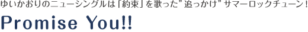

＜期間限定盤＞
品番：KICM-91697
価格：￥1,800＋税
【収録内容】
1. Promise You!! (作詞：大森祥子／作曲：俊龍／編曲：中西亮輔)
＊TVアニメ「カードファイト!! ヴァンガードG ストライドゲート編」EDテーマ
2. 真夏ハプニング (作詞・作曲・編曲：服部祐希)試聴
3. Promise You!! (off vocal ver.)
4. 真夏ハプニング (off vocal ver.)
★期間限定盤特典★
・「Promise You!!」MUSIC VIDEOMV視聴
・MAKING視聴
収録のDVD付き
★封入特典(初回プレス分のみ)★
「カードファイト!! ヴァンガードG」PRカード1枚封入
＜通常盤＞
品番：KICM-1698
定価：￥1,200＋税
【収録内容】
1. Promise You!! (作詞：大森祥子／作曲：俊龍／編曲：中西亮輔)
＊TVアニメ「カードファイト!! ヴァンガードG ストライドゲート編」EDテーマ
2. 真夏ハプニング (作詞・作曲・編曲：服部祐希)試聴
3. Promise You!! (TV size)
4. Promise You!! (off vocal ver.)
5. 真夏ハプニング (off vocal ver.)